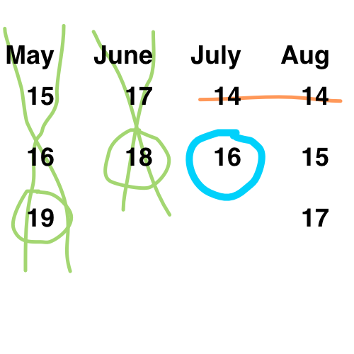

My solution to viral logic problem from April 2015 as reported on The Daily Mail UK. My friend Mark has a complete breakdown of why every possible solution passes or fails here.
When is Cheryl's Birthday?
Albert and Bernard just became friends with Cheryl, and they want to know when her birthday is. Cheryl gives them a list of 10 possible dates.
- May 15, May 16, May 19
- June 17, June 18
- July 14, July 16
- August 14, August 15, August 17
Cheryl then tells Albert and Bernard separately the month and the day of her birthday, respectively.
Albert: I don't know when Cheryl's birthday is, but I know that Bernard doesn't know either.
Bernard: At first I didn't know when Cheryl's birthday is, but now I know.
Albert: Now I know when Cheryl's birthday is too.
So when is Cheryl's birthday?
How to Solve
Knowns
Albert: knows month
Bernard: knows day
The dates:
- May: 15, 16, 19
- June: 17, 18
- July: 14, 16
- August: 14, 15, 17
The conversation between Albert and Bernard is the key to the question, so don't discard it!
The Conversation
Properly interpreting the conversation and knowing who is speaking (the one who knows the month or the day) is critical.
Albert speaks (first)
Albert: I don't know when Cheryl's birthday is, but I know that Bernard doesn't know either.
What this means: I wasn't given a month that has one of the unique days, so I know Bernard cannot deduce the month from the day he was given at this point.
- May: 15, 16, 19
- June: 17, 18
- July: 14, 16
- August: 14, 15, 17
Elimination Bold months eliminated, unique days also bolded for visual clarity.
Bernard replies to Albert (second)
Bernard: At first I didn't know when Cheryl's birthday is, but now I know.
What this means: I now know that Albert wasn't given either month with a unique day. I was given a day that is unique in the remaining set, which allows me to deduce the month.
- July: 14, 16
- August: 14, 15, 17
Elimination The 14th is common to both July and August, so both these dates are eliminated.
Albert replies to Bernard (third)
Albert: Now I know when Cheryl's birthday is too.
What this means: I now know that Bernard was given a day in the remaining set that allowed him to deduce the month. I was given a month that allows me to deduce the day.
- July: 16
- August: 15, 17
Since August has two options and July has one, the month he was given must be July. To further clarify: the only way Albert could also deduce the day for the month he was given is if there was only one day for him to choose.
Result: July 16th
TL;DR How I solved the problem on a piece of paper
- Green: Albert first
- Orange: Bernard second
- Blue: Albert third
